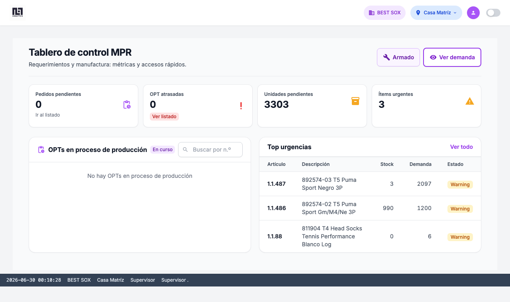
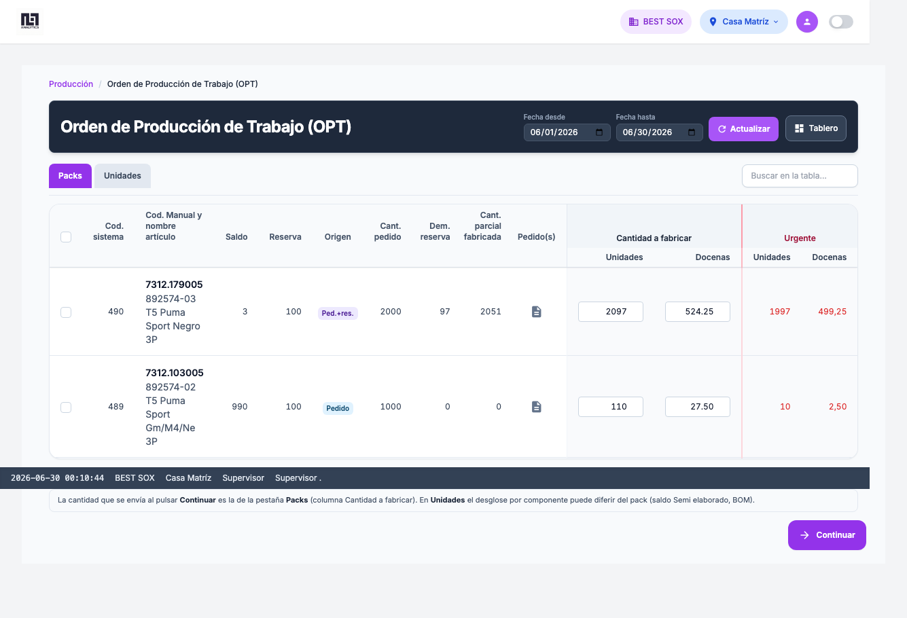
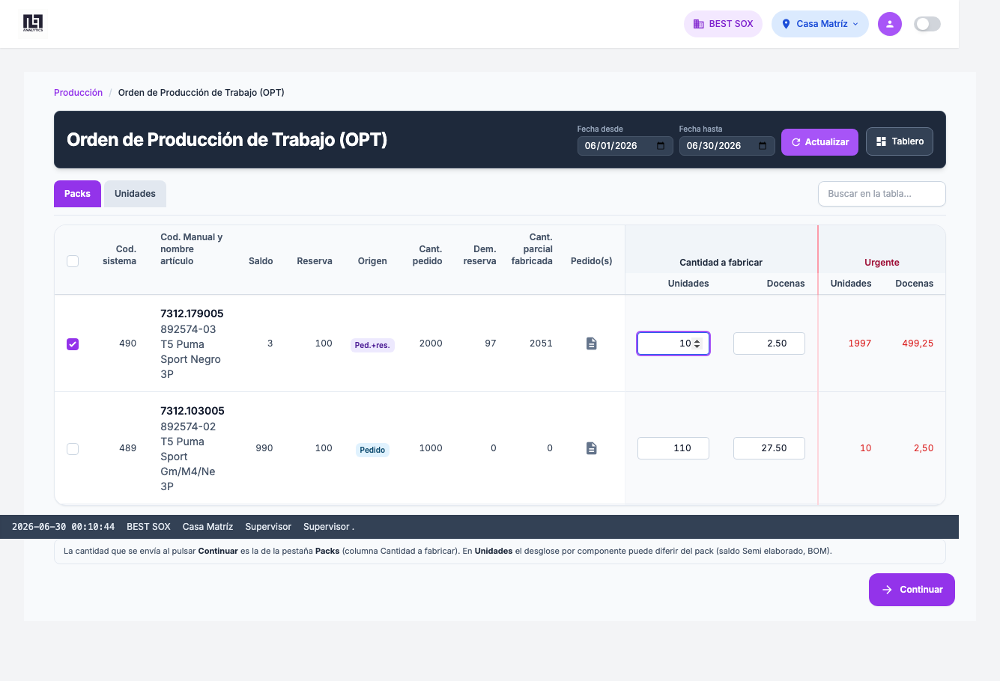
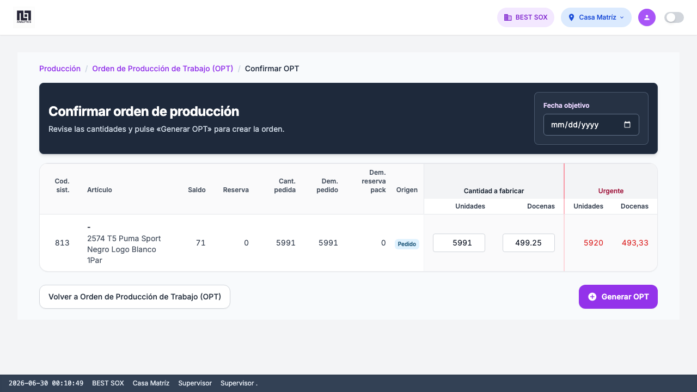
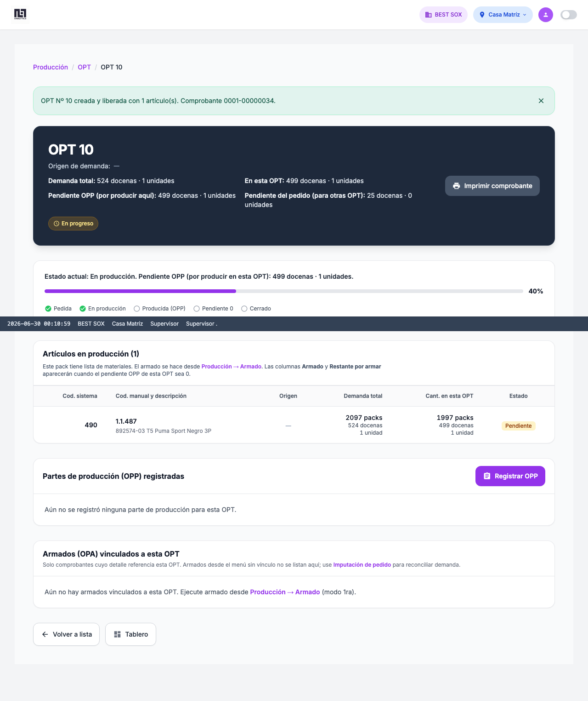
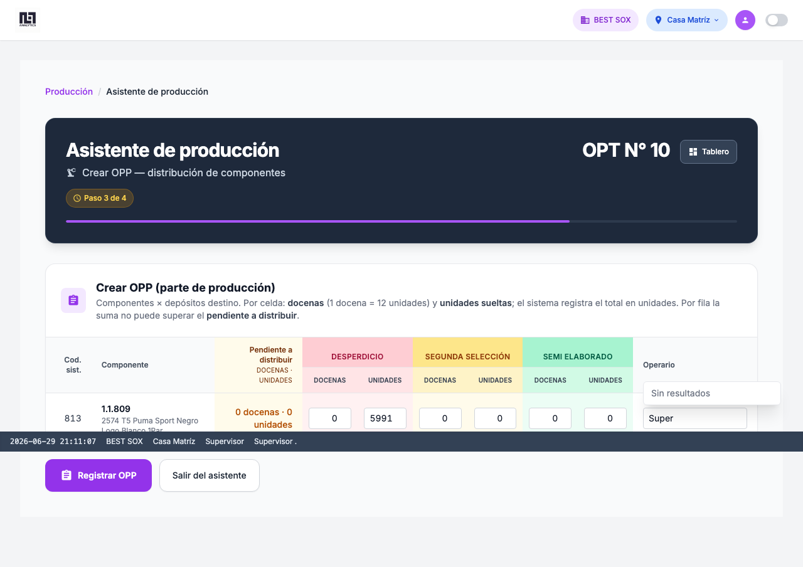
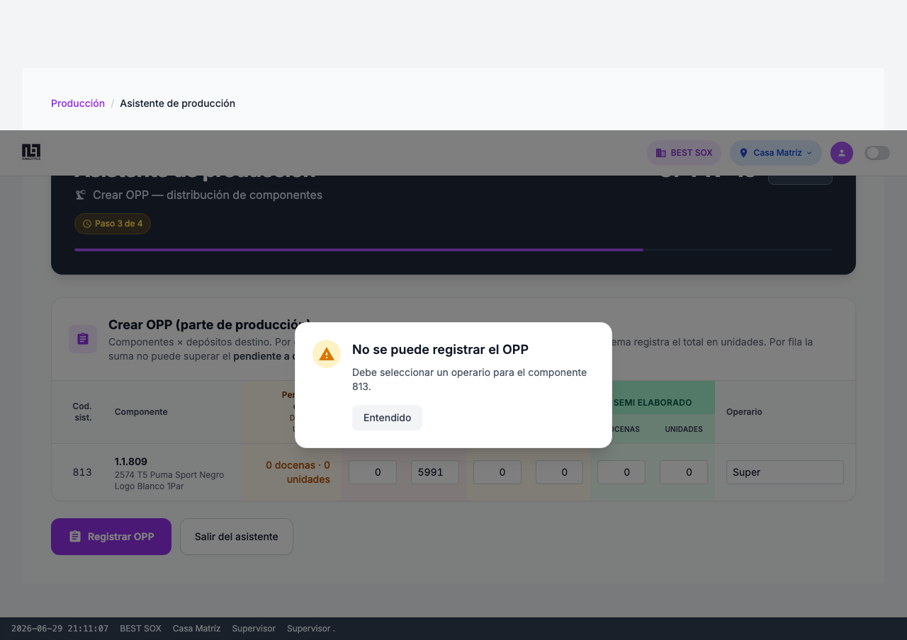
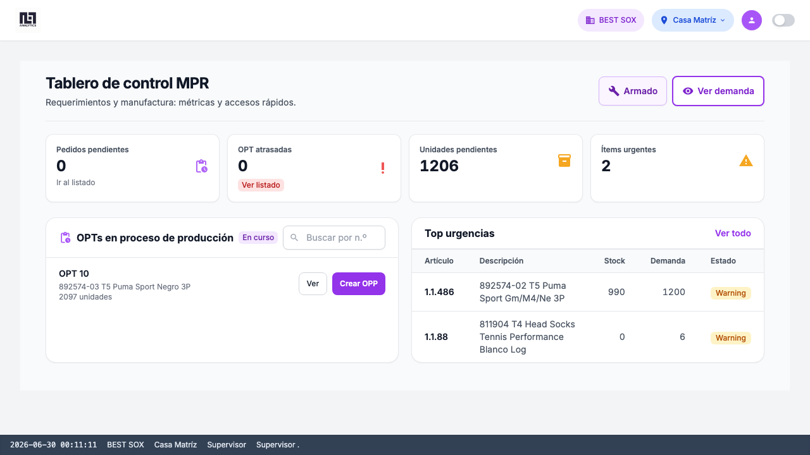
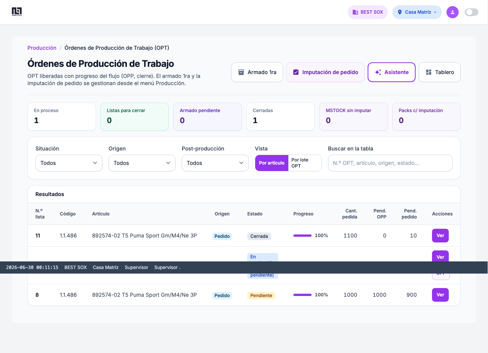
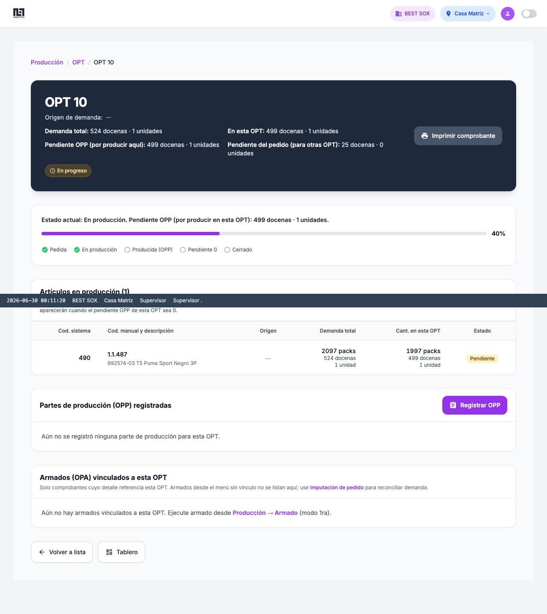

Manual de usuario MPR
Guía paso a paso con capturas reales del flujo Demanda → Generar OPT → Registrar OPP, validado con prueba E2E en Synap.
↗ Resumen del flujo
Este manual cubre el recorrido principal para atender demanda de producción: desde el tablero de control hasta registrar la parte de producción (OPP) y verificar la trazabilidad en el detalle de la OPT.
≡ Tabla de pasos
Resumen de pantallas, validaciones y capturas incluidas en este manual.
| Paso | Pantalla | Validación | Captura |
|---|---|---|---|
| 1 | Tablero de control | KPIs y accesos rápidos | Ver |
| 2 | Demanda (ventana pack) | Tabla de packs con demanda | Ver |
| 3 | Selección en demanda | Artículo y cantidad a fabricar | Ver |
| 4 | Confirmar OPT | Desglose BOM por componente | Ver |
| 5 | Detalle OPT | OPT creada y liberada | Ver |
| 6 | Formulario OPP | Distribución a Semi elaborado | Ver |
| 7 | OPP registrada | Sin errores; pendiente actualizado | Ver |
| 8 | Tablero post-OPP | Movimientos y OPTs en proceso | Ver |
| 9 | Listado OPT | OPT visible con progreso | Ver |
| 10 | Detalle OPT final | Trazabilidad OPT/OPP | Ver |
? Glosario rápido
- OPT (Orden de producción)
- Orden que agrupa la demanda por artículo pack. Se crea desde demanda y se libera a producción con movimiento de stock tipo OPT.
- OPP (Parte de producción)
- Distribución de componentes desde el depósito de Producción hacia Semi elaborado, Scrap o 2.ª selección. Requiere operario por fila con cantidad > 0.
- Pack
- Artículo terminado o unidad de demanda (ej. artículo 490 en la corrida de prueba).
- Componente
- Insumo de la receta (BOM) que se mueve al registrar OPT u OPP.
- Pendiente OPP
- Cantidad de componentes aún por distribuir desde Producción. Debe llegar a 0 antes de cerrar la OPT.
1 Tablero de control
/mpr/Punto de entrada al módulo MPR. Desde aquí se consultan KPIs, urgencias y accesos rápidos a demanda y armado.
- KPIs visibles: OPT en progreso, atrasadas, unidades pendientes, ítems urgentes.
- Panel Top urgencias con enlaces al detalle de OPT cuando aplica.
- Movimientos recientes: últimos OPT, OPP y armados.
- OPTs en proceso: acciones Crear OPP o Cerrar según pendiente.
- Acción rápida Ver demanda para iniciar el flujo.

2 Demanda — ventana pack
/mpr/demanda/ventana-pack/Pedido producción trabajo (OPT). Muestra packs con demanda, saldo, reserva y cantidad a fabricar.
- Pestaña Packs activa (alternar con Unidades para ver BOM).
- Columnas: artículo, saldo, reserva, cant. pedido, cant. a fabricar, urgente.
- Use Actualizar si necesita refrescar demanda desde pedidos.

3 Selección en demanda
/mpr/demanda/ventana-pack/Marque la fila del pack a fabricar e indique la cantidad. En la corrida de prueba: artículo 490, cantidad 10 unidades.
- Active el checkbox de la fila deseada.
- Edite Cant. a fabricar en la pestaña Packs (valor enviado al confirmar).
- Pulse Continuar (debajo de la tabla) para ir a Confirmar OPT.

4 Confirmar OPT (agrupar)
/mpr/demanda/ventana-pack/agrupar/Desglose por componentes (BOM) de los packs seleccionados. Revise cantidades antes de generar la orden.
- Tabla Unidades con saldo en Semi elaborado por componente.
- Ajuste Cant. a fabricar (unidades o docenas) si hace falta.
- Opcional: Fecha objetivo para KPI de OPT atrasadas.
- No se pide operario aquí; se asigna en OPP.
- Pulse Generar OPT para crear y liberar la orden.

5 Detalle OPT (post-generar)
/mpr/opt/<id_lista>/Tras generar, Synap redirige al detalle de la OPT recién creada (en la prueba: OPT 10).
- Cabecera con número de OP, demanda, pendiente OPP y origen de demanda.
- Timeline de progreso (Pedida → En producción → OPP → …).
- Enlace Registrar OPP cuando hay componentes pendientes de distribuir.
- La liberación OPT se ejecuta automáticamente si existe depósito tipo Producción.

6 Formulario OPP (asistente paso 3)
/mpr/wizard/?paso=3&id_lista=<id>Distribución de componentes desde Producción hacia depósitos destino (Semi elaborado, Scrap, 2.ª selección).
- Matriz componente × depósito: cargue docenas y unidades (1 docena = 12 unidades en OPP).
- Operario obligatorio en cada componente con cantidad > 0.
- La suma por componente no puede superar el pendiente a distribuir.
- Solo cantidades > 0 generan movimiento de stock.

7 OPP registrada
/mpr/wizard/?paso=3&id_lista=<id>Confirmación tras pulsar Registrar OPP. El asistente permanece en paso 3 si aún queda pendiente por distribuir.
- Sin modal de error; mensaje de éxito o actualización de pendientes.
- Columna Pendiente a distribuir disminuye según lo registrado.
- Si el pendiente llega a 0, el asistente avanza al paso 4 (Cierre).

8 Tablero — validación post-OPP
/mpr/Vuelva al tablero para verificar que el sistema refleja la OPP recién registrada.
- Movimientos recientes debe mostrar «OPP registrada» con comprobante.
- OPTs en proceso actualiza progreso y acciones (Crear OPP / Cerrar).
- KPIs coherentes con el estado de la OPT de prueba.

9 Listado OPT
/mpr/opt/Listado general de órdenes de producción con filtros, KPIs y acciones por fila.
- La OPT de prueba aparece en la tabla (Nº lista, artículo, progreso %).
- Columna Pend. OPP refleja lo distribuido.
- Acciones: Ver, OPP (si aplica), Cerrar, Armado (cuando OPP = 0 y hay BOM).

10 Detalle OPT — cierre del recorrido
/mpr/opt/<id_lista>/Revisión final de trazabilidad: OPPs vinculadas, pendientes y estado de armado (si aplica BOM).
- Progreso % del timeline actualizado tras la OPP.
- Historial / enlaces a movimientos OPT y OPP.
- Si pendiente OPP = 0: botón Cerrar OPT disponible.
- Armado 1ra se realiza desde Producción → Armado (fuera del asistente).

+ Próximos capítulos
Este manual visual cubre demanda → OPT → OPP. Capítulos planificados para ampliar la suite E2E:
- Armado 1ra desde OPT (carrito BOM, movimiento OPA).
- Armado 2da (surtido) e imputación supervisor 1ra.
- Cierre de OPT y validación de KPIs finales.
- Lista de materiales y configuración de depósitos.
Las capturas se regeneran con tests/e2e/mpr/ (Playwright). Ver REGISTRO_FLUJO_E2E.md.
📄 Referencias
Manual completo (texto): MANUAL_USUARIO_MPR.md
Glosario: GLOSARIO_MPR.md
Registro E2E: REGISTRO_FLUJO_E2E.md
Suite Playwright: tests/e2e/mpr/README.md